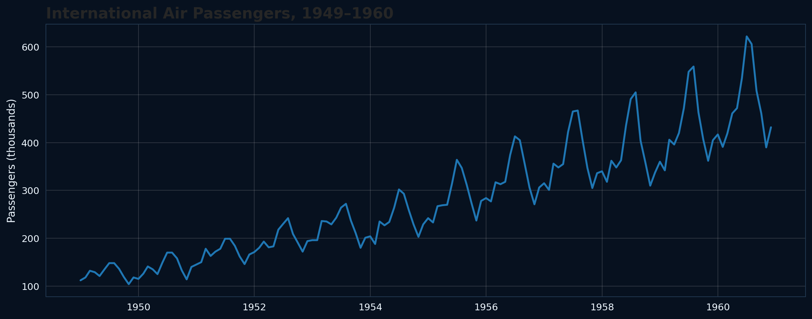
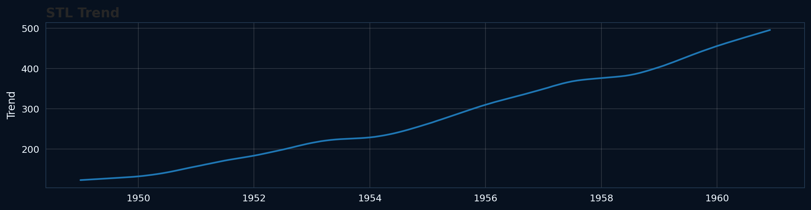
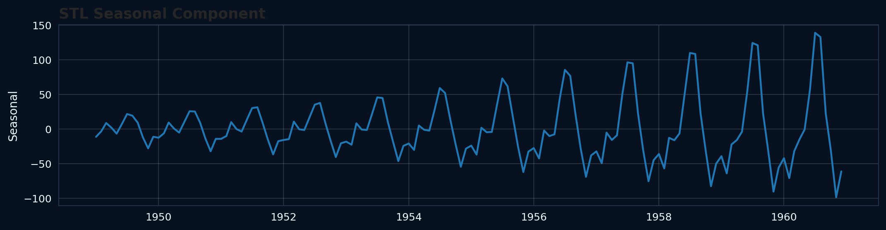
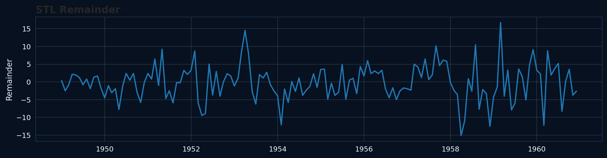
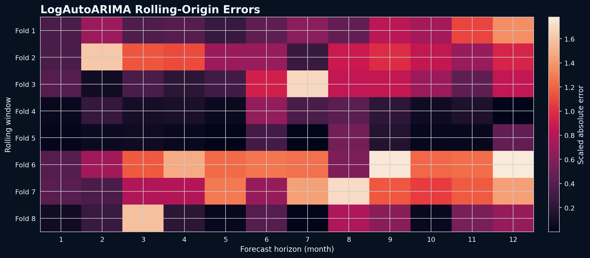

تحليل زمني كامل يبدأ بفهم الاتجاه والموسمية، ثم يختبر النماذج على 8 نوافذ Rolling-Origin، وينتهي بتوصية مبنية على الدقة، المعايرة، وثبات الأداء.
البيانات تحتوي على 144 شهرًا من يناير 1949 إلى ديسمبر 1960 بدون فجوات. السلسلة تُظهر اتجاهًا صاعدًا قويًا، وموسمية سنوية واضحة، كما أن حجم التذبذب الموسمي يزداد مع ارتفاع مستوى المسافرين.

نفس السلسلة بعد تفكيكها إلى الاتجاه، الموسمية، والباقي غير المفسر. هذه الرسومات مأخوذة مباشرة من تحليل الـNotebook.



Seasonal Naive هو الـfloor الأساسي لأنه يكرر قيمة نفس الشهر من السنة الماضية. لكنه لم يفسر كل البنية الزمنية: اختبارات Ljung-Box عند lag 12 و24 أعطت p-values صغيرة جدًا، أي أن الأخطاء ليست white noise.
| النموذج | MASE | RMSSE | Scaled CRPS | 80% Coverage | Worst-fold MASE |
|---|---|---|---|---|---|
| Naive | 2.119 | 2.452 | 0.1103 | 68.8% | 3.196 |
| Seasonal Naive | 1.313 | 1.246 | 0.0616 | 51.0% | 1.959 |
| AutoARIMA | 0.647 | 0.683 | 0.0339 | 69.8% | 1.594 |
| LogAutoARIMA | 0.638 | 0.653 | 0.0327 | 72.9% | 1.173 |

رغم تفوق LogAutoARIMA، بقي اعتماد زمني واضح في الأخطاء. Ljung-Box أعطى:
اعتماد LogAutoARIMA كنموذج التنبؤ الحالي لأنه حقق أفضل MASE وRMSSE وCRPS وأفضل Worst-fold MASE بين النماذج المختبرة.
اختبار dynamic regression باستخدام متغير خارجي مثل متوسط درجة الحرارة الشهري، ثم تقييمه بنفس 8 rolling windows و12-month horizon. لا يستبدل النموذج الحالي إلا إذا حسّن الدقة وقرّب coverage من 80%.